CS 76 / 176
Robot motion planning
Professor Devin Balkcom
devin@cs.dartmouth.edu
office: Sudikoff 206
Robot arm configuration
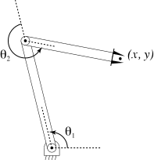configuration:
Configuration space
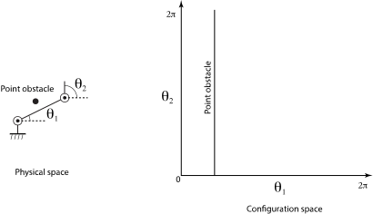Linkage notation

Mechanisms
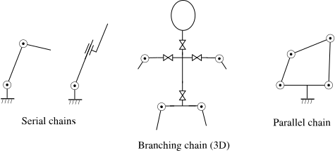Also, see: Reuleaux collection of mechanisms
Discussion: degrees of freedom
How many DOFs does each of the following systems have?
- The leftmost arms, above
- Your phone, sitting on the table (ignore the buttons)
- Your phone, in the air above the table (ignore buttons)
- Your arm (ignore the fingers)
- An Atari pong game (the stuff on the screen)
- An elephant trunk.
Closed chains
(Animation of a Reuleax 4-bar linkage from Youtube.)
Kinematics
Space-time
- Path: A continuous curve of configurations.
- Trajectory: A curve in c-space parametrized by time.
Imagine a robot arm trying to catch a thrown ball.
Constructing c-spaces
Easy only for very, very simple systems
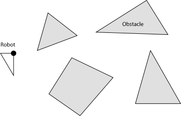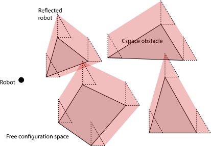c-space for planear translation of a triangular robot
Visibility graphs
An optimality constraint can lead to a discrete space.
- Subsections of optimal paths are optimal.
- Free space.
- Boundary.
- Jump points.
Discussion: visibility graphs
- What's the size of the graph?
- Do visibility graphs work for shapes with smooth boundaries?
- Do visibility graphs work in three dimensions (or higher)?
Cell decomposition
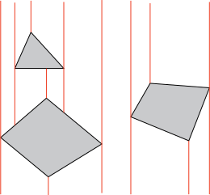Exact cell decomposition. (Polyhedral obstacles.)
Cell decomposition
 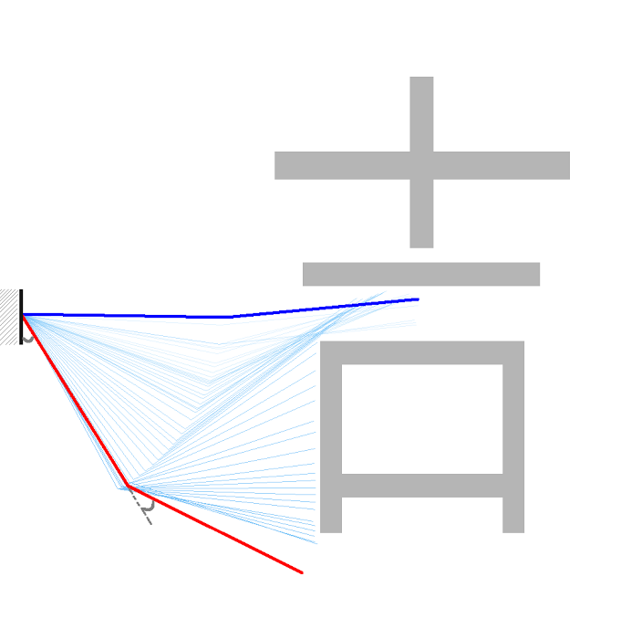
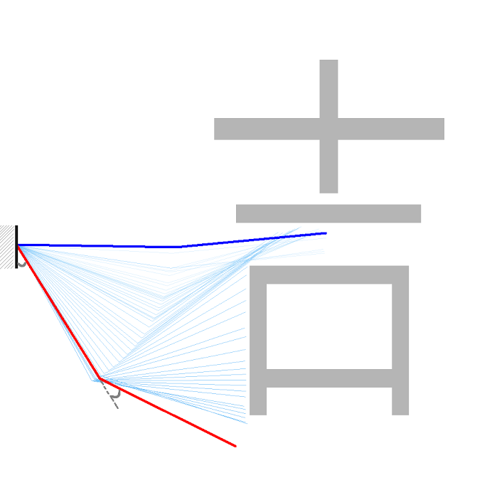
Approximate cell decomposition.
(This one from one of our papers.)
Curse of dimensionality
The number of cells tends to scale exponentially with the dimensionality of the space.
Collisions
- Can we efficiently detect a collision?
- Can we efficiently compute a distance function?

(Figure from Wikipedia article on GJK algorithm.)
PRM roadmaps
See pages for research groups:
Voronoi diagrams
Voronoi cells are the points closest to exactly one point.
Medial axis roadmap
Medial axis The set of all points having more than one closest point on the obstacle. (Topological skeleton, Blum.)
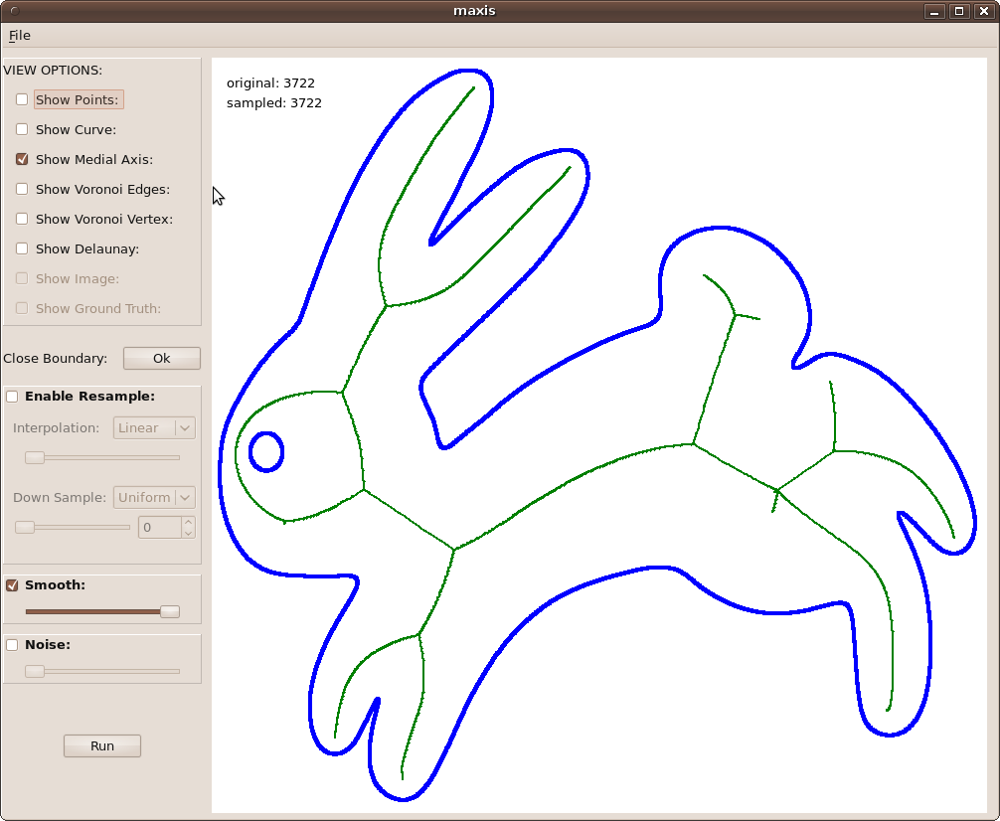(Figure from Schulz, Ganacim and Cruz.)
Discussion: Voronoi diagrams
Do the roadmaps described by Voronoi diagrams work in higher dimensions? (Hint, consider the set of points equidistant from two point obstacles in 3D.) If not, could you extend them somehow to work in higher dimensions?
Retractions
(Figure from Schulz, Ganacim and Cruz.)
Non-holonomic constraints
A diff-drive (left) and an omni-directional robot (right)
Non-holonomic constraints
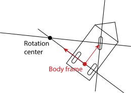Tricycle steering
Tricycle system
Tricycle system
Controls:
Distance of rotation center from center is
Tricycle system
Three degrees of freedom, but only two controls.
Ackerman steering

(figure from Wikipedia)
Differential drive
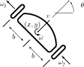RRT
PRMs require a local planner, sometimes called a steering method.
Steering methods can be hard to find for PRMs. RRTs just simulate controls to build a tree.
Simple tree planner
- Add start to queue
- Select item from queue, simulate a few actions
- Add results as nodes to queue
Problems: how to discretize actions? How many nodes are generated?
RRT
- Add start to tree
- Select nearest node from tree from some randomly selected point, simulate some actions
- Add results as nodes to queue
Problems: how to discretize actions? What does nearest mean? How many nodes are generated? How to compute nearest node efficiently? Which actions do we simulate?
Ways to sample
A low-discrepancy sequence: Van der Corput sequence
| 001 | 100 | 4 / 8 |
| 010 | 010 | 2 / 8 |
| 011 | 110 | 6 / 8 |
| 100 | 001 | 1 / 8 |
| 101 | 101 | 5 / 8 |
| 110 | 011 | 3 / 8 |
| 111 | 111 | 7 / 8 |
Steering methods
(Optimal)
Dubins car (1957)
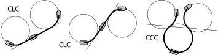Other systems:
- Reeds-Shepp (1991)
- Diff-drive (2002, Balkcom and Mason)
Steering methods
(2006, 2012, Kavathekar, Furtuna, Wang, Balkcom)
Omnidirectional robot